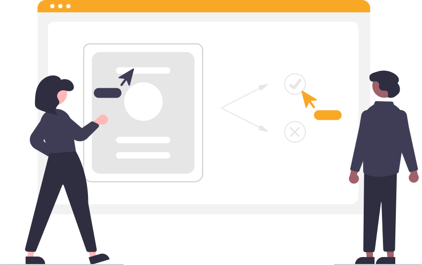

Aprendiendo a crear recursos web de manera sencilla
¿Cuántas veces has querido crear contenidos web y no sabías por dónde empezar?
¿Cuántas veces tenías una idea sobre cómo querías que fuera tu web, pero no encontrabas la forma
o la manera de llevarlo a
cabo?
Con la idea de solucionar todas esas dudas y ayudar a entusiastas del desarrollo web a
evolucionar sus habilidades surge
este proyecto.
Aquí se podrá encontrar desde recomendaciones libros y cursos hasta un espacio donde poder
visualizar
diferentes elementos comunmente utilizados como botones, barras de navegación, menús
desplegables, iconos, paginadores, tablas, sliders, spinners de progresión...
Si tienes alguna duda que no puedas resolver mediante este espacio, puedes transmitir tu duda por cualquiera de los canales
que encontraras en el espacio de contacto.

¡ Muchas gracias por su visita y espero que disfrute de este espacio !
Laura Pérez Medeiro
Diseño y desarrollo de material multimedia aplicado